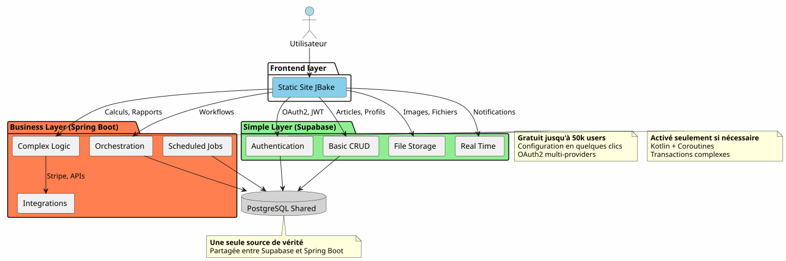
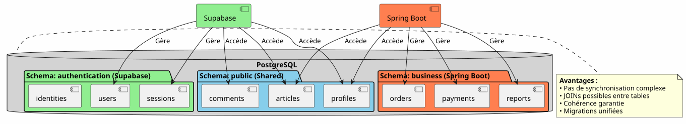
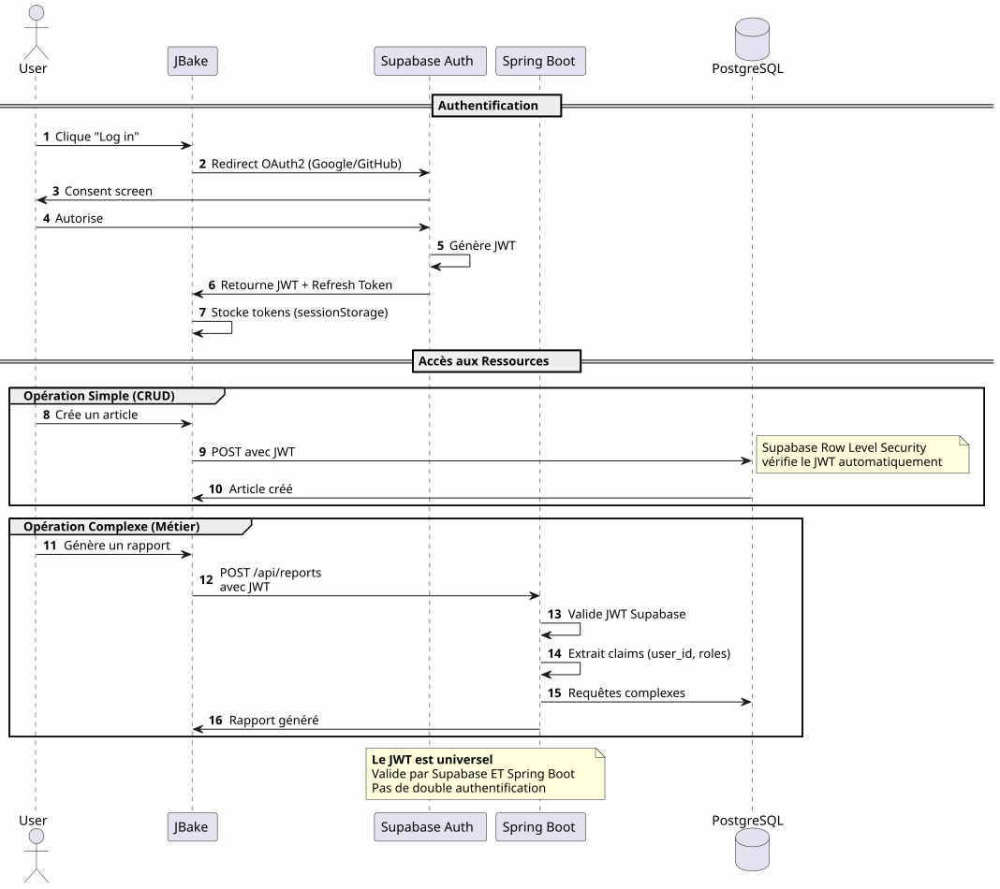
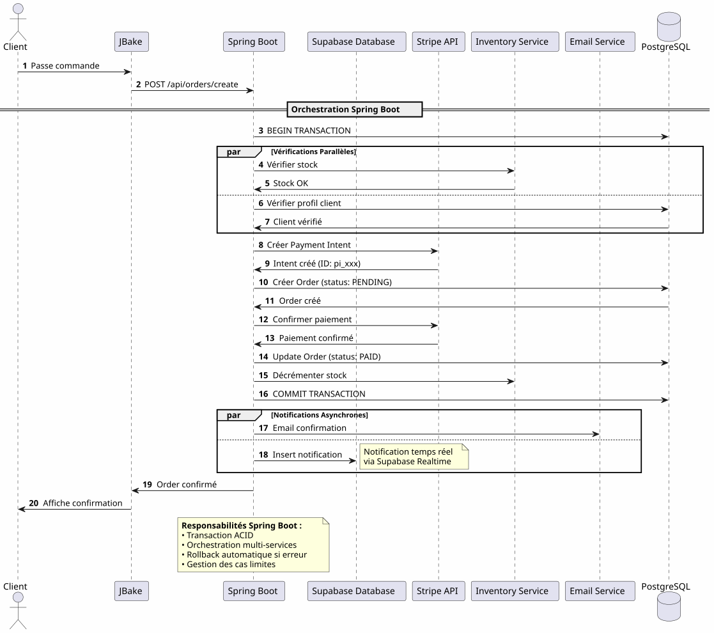
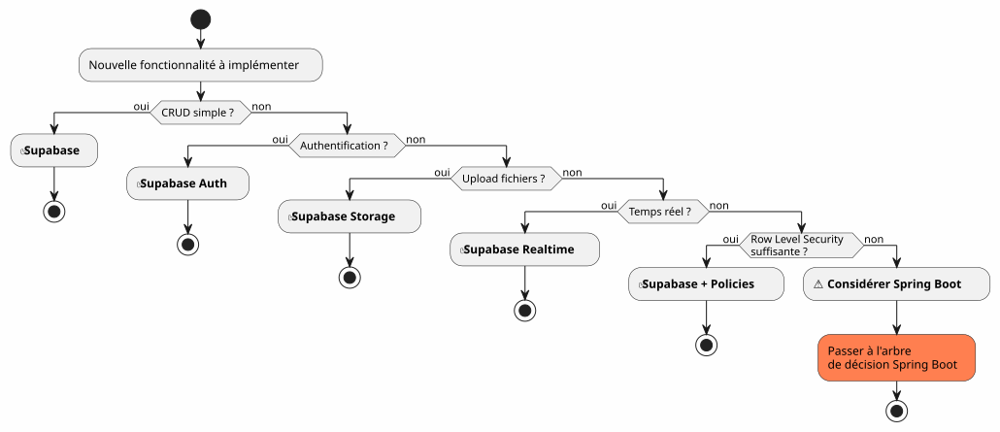
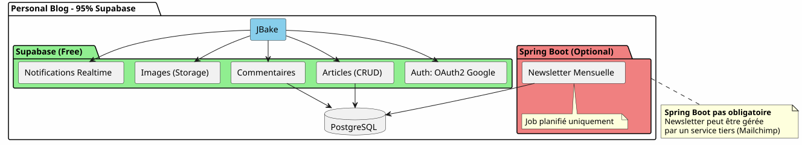
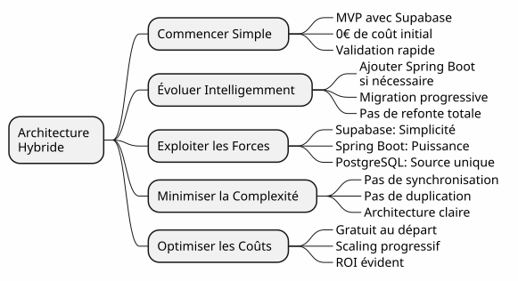

Hybrid Architecture: The Best of Both Worlds with Supabase and Spring Boot
Published on 14 January 2026
Instead of choosing between the simplicity of Supabase and the power of Spring Boot, why not combine the two? Discover a hybrid architecture that leverages the best of each technology.
- tic
-
[]
The False Dilemma of Modern Architecture
When building a modern application with a static frontend, we often find ourselves facing a binary choice:
-
To bet everything on a Backend-as-a-Service solution(Supabase, Firebase) - simple but limited
-
Build a complete backend(Spring Boot, Node.js) - powerful but complex
This choice is a false dilemma. The hybrid architecture proposes a third way: using each technology where it excels
Architectural Vision
Traditional Architecture: Monolithic
In this approach, even the simplest operations (reading an article, creating a comment) must go through your backend. You pay the cost of complexity from day one.
The BaaS Architecture: Every Delegate

On the other hand, delegating everything to a BaaS is attractive at first but quickly shows its limits as soon as business logic becomes complex.
Hybrid Architecture: Separation of Concerns

The hybrid architecture clearly separates responsibilities according to the complexity and nature of the operations.
Design Principles
Principle 1: Start Simple, Evolve Intelligently
Failed to generate image: PlantUML preprocessing failed: [From <input> (line 14) ]
@startuml
skinparam backgroundColor #FEFEFE
rectangle "Phase 1 : MVP" #LightGreen {
component "JBake + Supabase" as mvp
note right
✓ Développement en jours
✓ Coût : 0€
✓ Validation concept
end note
}
rectangle "Phase 2: Growth" #LightYellow {
component "JBake + Supabase
^^^^^
Syntax Error? (Assumed diagram type: component)
@startuml
skinparam backgroundColor #FEFEFE
rectangle "Phase 1 : MVP" #LightGreen {
component "JBake + Supabase" as mvp
note right
✓ Développement en jours
✓ Coût : 0€
✓ Validation concept
end note
}
rectangle "Phase 2: Growth" #LightYellow {
component "JBake + Supabase
+ Spring Boot (optional)" as growth
note right
✓ Logique métier émerge
✓ Premiers jobs planifiés
✓ Intégrations tierces
end note
}
rectangle "Phase 3: Scale" #LightCoral {
component "Complete Architecture" as scale
note right
✓ Orchestration complexe
✓ Performances optimisées
✓ Cache distribué
end note
}
mvp -down-> growth : Quand la complexité\nle justifie
growth -down-> scale : Optimisation\ncontinue
@enduml
Do not build Spring Boot if you don’t need it.Start with Supabase, add Spring Boot when complexity justifies it.
Principle 2: Separation by Nature of Operation

Principle 3: A Single Source of Truth

By sharing the same PostgreSQL instance, Supabase and Spring Boot work on the same data without complex synchronization.
Orchestration of the Flows
Flow 1: Centralized Authentication

Key point: A single authentication process, a single JWT, usable everywhere.
Flux 2: Orchestration of a complex business process

What Spring Boot bringsReliable orchestration of complex processes involving multiple systems with transactional guarantee.
Flow 3 : Scheduled Jobs and Synchronizations
Failed to generate image: PlantUML preprocessing failed: [From <input> (line 4) ] @startuml skinparam backgroundColor #FEFEFE participant "Scheduler ^^^^^ Syntax Error? (Assumed diagram type: sequence) @startuml skinparam backgroundColor #FEFEFE participant "Scheduler (Spring Boot)" as scheduler participant "Report Service" as report participant "PostgreSQL" as db participant "External API" as api participant "Email Service" as email participant "Supabase Storage" as storage == Job Quotidien : 2h00 == activate scheduler scheduler -> report : Déclenche génération rapport activate report report -> db : Récupère données\ndes dernières 24h db -> report : Dataset report -> report : Calculs & Agrégations report -> report : Génération PDF report -> storage : Upload PDF storage -> report : URL publique report -> email : Envoie aux admins\navec lien PDF deactivate report == Job Hebdomadaire : Dimanche 3h00 == scheduler -> report : Synchronisation externe activate report report -> api : Fetch données externes api -> report : Nouvelles données report -> db : Mise à jour tables report -> db : Nettoyage données obsolètes deactivate report == Job Mensuel : 1er du mois == scheduler -> report : Facturation activate report report -> db : Liste clients actifs report -> report : Calcul montants report -> api : Génération factures (Stripe) report -> email : Envoi factures deactivate report deactivate scheduler note right of scheduler **Impossible avec Supabase seul** Edge Functions non adaptées pour jobs longs et récurrents end note @enduml
What Spring Boot brings: Reliable scheduled jobs with state management, automatic retry, and guaranteed execution.
Decision Matrix
When to Use Supabase?

When to Use Spring Boot?

Examples of Architecture by Project Type
Blog / Portfolio

Verdict: 100% Supabase is more than enough.
SaaS application
Verdict: Hybrid architecture needed. Supabase for the essentials, Spring Boot for the critical part (payments, invoicing).
E-commerce
VerdictSpring Boot indispensable. Supabase for auth and catalog only.
Progressive Migration Strategy

Costs and Operational Considerations
Cost Structure
Operational Responsibilities
Conclusion: Perfect Balance
The Supabase + Spring Boot hybrid architecture is not a compromise, it’s asynergy.
The Principles to Remember

When to Choose This Architecture?
✅ This architecture is ideal if:
-
You want to start quickly (MVP in days, not months)
-
You anticipate a growth in business complexity
-
You want to minimize the initial costs
-
You love PostgreSQL and want a single source of truth
-
You appreciate Kotlin and Coroutines for the business code
-
You want to avoid total vendor lock-in
�❌ This architecture is NOT suitable if :
-
Your project is simple and will remain (personal blog → 100% Supabase suffices)
-
You already have an established backend stack that you master
-
You prefer a traditional monolith
-
You need .NET, Python, or another backend language
Final overview
Failed to generate image: PlantUML preprocessing failed: [From <input> (line 35) ]
@startuml
skinparam backgroundColor #FEFEFE
package "Complete Hybrid Architecture" {
actor "Users" as users
rectangle "Frontend (Static)" #SkyBlue {
[JBake / GitHub Pages]
note right: Gratuit, CDN global
}
rectangle "Simple Backend (Supabase)" #LightGreen {
[Auth OAuth2]
[CRUD APIs]
[Storage]
[Realtime]
note right
Gratuit jusqu'à 50k users
Zéro configuration serveur
end note
}
rectangle "Business Backend (Spring Boot)" #Coral {
[Orchestration]
[Jobs Planifiés]
[Intégrations]
[Transactions]
note right
Activé uniquement
si nécessaire
end note
}
database "PostgreSQL
^^^^^
Syntax Error? (Assumed diagram type: component)
@startuml
skinparam backgroundColor #FEFEFE
package "Complete Hybrid Architecture" {
actor "Users" as users
rectangle "Frontend (Static)" #SkyBlue {
[JBake / GitHub Pages]
note right: Gratuit, CDN global
}
rectangle "Simple Backend (Supabase)" #LightGreen {
[Auth OAuth2]
[CRUD APIs]
[Storage]
[Realtime]
note right
Gratuit jusqu'à 50k users
Zéro configuration serveur
end note
}
rectangle "Business Backend (Spring Boot)" #Coral {
[Orchestration]
[Jobs Planifiés]
[Intégrations]
[Transactions]
note right
Activé uniquement
si nécessaire
end note
}
database "PostgreSQL
Unique source of truth" as db #LightGray
users --> [JBake / GitHub Pages]
[JBake / GitHub Pages] --> [Auth OAuth2]
[JBake / GitHub Pages] --> [CRUD APIs]
[JBake / GitHub Pages] --> [Storage]
[JBake / GitHub Pages] --> [Realtime]
[JBake / GitHub Pages] --> [Orchestration]
[Auth OAuth2] --> db
[CRUD APIs] --> db
[Orchestration] --> db
[Jobs Planifiés] --> db
[Intégrations] --> db
}
note bottom of db
**Une seule base, deux consommateurs**
• Supabase pour le simple
• Spring Boot pour le complexe
• Aucune synchronisation requise
end note
@enduml
The Best of Both Worlds
This architecture gives you:
🚀 The Velocity of Supabase
-
Startup in hours, not weeks
-
OAuth2 authentication in a few clicks
-
Automatically generated REST APIs
-
Zero server configuration
�💪 The Power of Spring Boot
-
Kotlin and Coroutines for elegant asynchronous code
-
Orchestration of complex business processes
-
Reliable scheduled jobs
-
Guaranteed ACID transactions
-
Complete Spring ecosystem
💰 The Progressive Economy
-
0€ to start and validate
-
Costs that follow growth
-
No premature over‑engineering
🎯 Architectural Flexibility
-
Progressive migration without rewrite
-
Adding Spring Boot only if necessary
-
No total vendor lock-in
-
Evolvable architecture
To Go Further
Technical Resources
Supabase Documentation :
Spring Boot documentation:
Supplementary Articles :
-
Securing APIs with JWT
-
PostgreSQL performance optimization
-
Progressive migration patterns
-
Error handling in distributed architecture
Real Use Cases
This hybrid architecture is successfully used in:
-
SaaS B2B: Supabase authentication, Spring Boot billing
-
Marketplaces: Catalog Supabase, transactions Spring Boot
-
Content PlatformsSupabase articles, Spring Boot analytics
-
Internal tools: CRUD Supabase, workflows Spring Boot
Startup Checklist
Phase 1 - Foundations (Week 1)
-
Create Supabase account - [ ] Configure PostgreSQL project - [ ] Enable Auth (Google, GitHub) - [ ] Define initial schema - [ ] Configure Row Level Security - [ ] Test APIs from JBake
Phase 2 - MVP (Week 2-3)
-
Implement main pages - [ ] Integrate OAuth2 authentication - [ ] Create CRUD forms - [ ] Configure Storage for files - [ ] Deploy on GitHub Pages - [ ] Test under real conditions
Phase 3 - Evolution (As needed)
-
Identify complex logic needs - [ ] Create Spring Boot project if needed - [ ] Configure Supabase JWT validation - [ ] Connect to Supabase PostgreSQL - [ ] Migrate complex features - [ ] Implement scheduled jobs - [ ] Deploy Spring Boot (Cloud Run, etc.)
Anti-Patterns to Avoid
�❌ Do not:
-
Duplicate the data between Supabase and Spring Boot
-
Create two separate PostgreSQL databases
-
Code the authentication yourself
-
Use Spring Boot for simple CRUD
-
Over-architecting from the outset
-
Ignore Supabase Row Level Security
Better to do:
-
Share a single PostgreSQL database
-
Let Supabase handle authentication
-
Use Spring Boot only for the complexity
-
Start simple, evolve gradually
-
Leverage the strengths of each technology
-
Secure with RLS at database level
Evolution perspectives
Adding New Capabilities
Scaling Horizontal
As your application grows, the hybrid architecture scales naturally:
Supabase:
-
Automatically scale up to millions of operations
-
Read replicas for read performance
-
Point-in-time recovery for security
Spring Boot :
-
Multiple instances behind load balancer
-
Stateless design facilitates horizontal scaling
-
Kubernetes for orchestration if needed
PostgreSQL :
-
Partitioning for large tables
-
Connection pooling (PgBouncer)
-
Sharding if really necessary (rare)
Architectural Testimonials
Startup SaaS (50k users)
_ We started 100% Supabase. At 5k users, we added Spring Boot only for Stripe billing and monthly reports. One year later, 80% of our operations still go through Supabase. Spring Boot handles only the critical part. This separation allowed us to scale without a redesign. _
E-learning platform (10k users)
_ Supabase’s OAuth2 authentication saved us three weeks of development. The auto-generated APIs manage our entire course catalog. Spring Boot is used only for PDF certificates and progress emails. Simple, maintainable, scalable architecture. _
Marketplace B2B (3k users)
_ Spring Boot handles transactions between buyers and sellers (critical). Supabase handles everything else: profiles, real-time messaging, documents. The fact that they share the same PostgreSQL database avoids any complex synchronization for us. It is the best architectural choice we have made. _
Synthesis: A Modern Architectural Paradigm
The Supabase + Spring Boot hybrid architecture represents a new paradigm:the architectural specialization.
Failed to generate image: PlantUML preprocessing failed: [From <input> (line 20) ]
@startuml
skinparam backgroundColor #FEFEFE
rectangle "Old Paradigm" #LightCoral {
card "Everything in the Backend" {
[Auth]
[CRUD]
[Logique Métier]
[Jobs]
[Storage]
[Realtime]
}
note bottom
Complexité maximale
dès le jour 1
end note
}
rectangle "New Paradigm" #LightGreen {
card "Supabase
^^^^^
Syntax Error? (Assumed diagram type: component)
@startuml
skinparam backgroundColor #FEFEFE
rectangle "Old Paradigm" #LightCoral {
card "Everything in the Backend" {
[Auth]
[CRUD]
[Logique Métier]
[Jobs]
[Storage]
[Realtime]
}
note bottom
Complexité maximale
dès le jour 1
end note
}
rectangle "New Paradigm" #LightGreen {
card "Supabase
(Convenience)" {
[Auth]
[CRUD Simple]
[Storage]
[Realtime]
}
card "Spring Boot
(Differentiation)" {
[Logique Métier]
[Jobs]
[Intégrations]
}
note bottom
Complexité progressive
ajoutée seulement si nécessaire
end note
}
[Ancien Paradigme] -right-> [Nouveau Paradigme] : Évolution
@enduml
The fundamental principle:Don’t build what already exists as a service. Focus on what differentiates your application.
The 80/20 Rule
In most applications:
-
80% of operationsare standard CRUD → Supabase
-
20% of operationsrequire business logic → Spring Boot
This natural rule justifies the hybrid architecture.
Final conclusion
Hybrid architecture is not a technical compromise, it’s anstrategic decision.
It allows you to:
-
�✅ Start quickly with a functional MVP
-
�✅ Validate your market without heavy investment
-
�✅ Gradually evolve when complexity requires it
-
�✅ Master your costs at each step
-
✅ Leverage the best of each technology
-
✅ Avoid premature over-engineering
-
Maintain flexibility for the future
It represents:
-
🎯Pragmatism: Every technology where she excels
-
�🚀Velocityminimal time-to-market
-
�💰Economy: Costs aligned with value
-
�🔮Scalability: Architecture that grows with you
-
�🛡️RobustnessProven and reliable services
Your Next Step
If this architecture speaks to you, here’s where to start:
-
Create a Supabase account(free)
-
Define your minimal data schema
-
Configure OAuth2 authentication
-
Create your first JBake page that consumes the API
-
Deploy to GitHub Pages
You will have a functional MVP ina few days.
Spring Boot will come naturally when you need it. Not before.
Hybrid architecture is the art of building exactly what is needed, when it is needed.
Good development! 🚀
Share this article if you think it can help other developers make the right architectural choices.